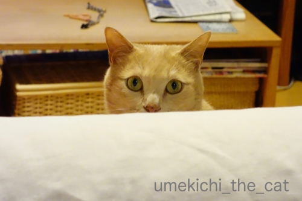
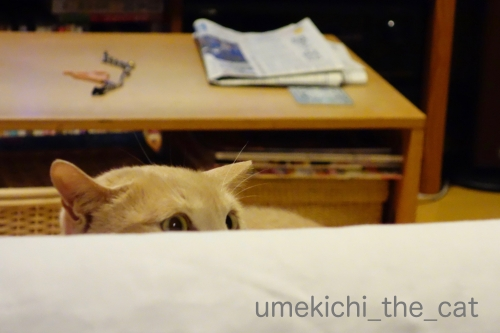
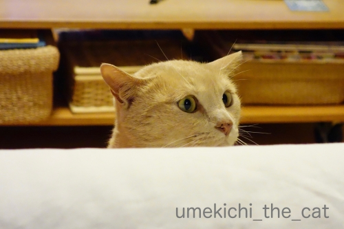
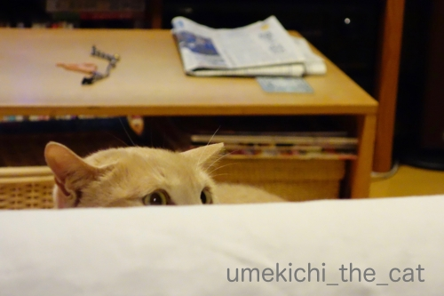
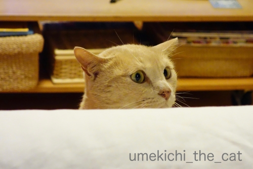

キロキロお目目と平らなお耳 [梅吉]

ソファの背もたれ越しに目があったので背もたれの陰に身を潜めてみる。

梅吉も身を低くしてます(*>艸<)
（写真を撮ってもらうのに移動しましたよ）

私がさらに身を低くすると覗き込む梅吉w
ああ・・・平べったく（北海道弁）なったお耳とまあるい頭がたまりません！！

このキロキロ〜っとしたお目目も可愛いんですよねー0(≧▽≦)0
この姿が見たくて時々隠れてます。
住吉大社の四宮さんと三宮さん。


現在こんな風に令和元年を寿いでます。
 ↑ガブッと一押し↑
↑ガブッと一押し↑
週末は奈良に行ってきました。
奈良国立博物館で藤田美術館展を観てきたのです！藤田家所蔵の曜変天目！！
・・・と言いたいところなのですが。
13時頃に博物館入口に到着すると長蛇の列。
しかも整理券番号〇〇番〜〇〇番なんて書いてあります。
入場制限かかってる？と思い係のお兄さんに
「整理券が必要なの？どこで配布しているの？？」と聞くと
「配布は午前中で終了しました。」と
ええええええええ！！！！！！
空いている事は無いだろうと思ってましたが
入場すら出来ないなんてあり？と
「どういうシステムになっているんですか？」と聞くと
「開館時間と同時に整理券を配布しました。が、すぐに定員になり今日の分はもうお終いです」って。
読みが甘かった・・・。
東大寺の大仏さんにご挨拶してとぼとぼ大阪に帰りましたよ。
でもそんなに混んでるなんて噂にも聴いてないしなー、変だなーと
博物館のHPを見ても入館時に整理券配布なんて案内はありません。
すると同じくHPをチェックしていたおっとが
「今日の午後、公開講座があったって。並んでたのもしかしてそれ？」と。
・・・・・・=͟͟͞͞ ( ꒪౪꒪
どうやらおっちゃんとおばちゃんは公開講座の列を入館待ちの列と勘違いして帰ってきた様なのです。
電話で入館には整理券が必要か？と問い合わせると「要りません」との返事(⌒-⌒;
そもそも係りのお兄さんに「この列は入館待ちの列ですか？」と聞くべきでしたw
とほほな思い込み＆勘違い。
鹿さんに会えたから良いんですけどねーw
今週末リベンジです(〃▽〃)
生え始めの鹿さんのツノを触らせてもらいました。
柔らかい！暖かい！！
あれがそのうち硬く冷たくなるんですね。知らなかったー。
ソファの背もたれ越しに目があったので背もたれの陰に身を潜めてみる。

梅吉も身を低くしてます(*>艸<)
（写真を撮ってもらうのに移動しましたよ）

私がさらに身を低くすると覗き込む梅吉w
ああ・・・平べったく（北海道弁）なったお耳とまあるい頭がたまりません！！
このキロキロ〜っとしたお目目も可愛いんですよねー0(≧▽≦)0
この姿が見たくて時々隠れてます。
住吉大社の四宮さんと三宮さん。
現在こんな風に令和元年を寿いでます。
週末は奈良に行ってきました。
奈良国立博物館で藤田美術館展を観てきたのです！藤田家所蔵の曜変天目！！
・・・と言いたいところなのですが。
13時頃に博物館入口に到着すると長蛇の列。
しかも整理券番号〇〇番〜〇〇番なんて書いてあります。
入場制限かかってる？と思い係のお兄さんに
「整理券が必要なの？どこで配布しているの？？」と聞くと
「配布は午前中で終了しました。」と
ええええええええ！！！！！！
空いている事は無いだろうと思ってましたが
入場すら出来ないなんてあり？と
「どういうシステムになっているんですか？」と聞くと
「開館時間と同時に整理券を配布しました。が、すぐに定員になり今日の分はもうお終いです」って。
読みが甘かった・・・。
東大寺の大仏さんにご挨拶してとぼとぼ大阪に帰りましたよ。
でもそんなに混んでるなんて噂にも聴いてないしなー、変だなーと
博物館のHPを見ても入館時に整理券配布なんて案内はありません。
すると同じくHPをチェックしていたおっとが
「今日の午後、公開講座があったって。並んでたのもしかしてそれ？」と。
・・・・・・=͟͟͞͞ ( ꒪౪꒪
どうやらおっちゃんとおばちゃんは公開講座の列を入館待ちの列と勘違いして帰ってきた様なのです。
電話で入館には整理券が必要か？と問い合わせると「要りません」との返事(⌒-⌒;
そもそも係りのお兄さんに「この列は入館待ちの列ですか？」と聞くべきでしたw
とほほな思い込み＆勘違い。
鹿さんに会えたから良いんですけどねーw
今週末リベンジです(〃▽〃)
生え始めの鹿さんのツノを触らせてもらいました。
柔らかい！暖かい！！
あれがそのうち硬く冷たくなるんですね。知らなかったー。

カフェオレ色の梅吉

梅吉 2023年8月10日 永眠


梅吉と出会った譲渡会

犬猫の理由なき殺処分ゼロ
妄想広告
UMEKICHI 光

爆発的に早い！
時々攻撃的！
Thanks to Mr.Boss365
爆発的に早い！
時々攻撃的！
Thanks to Mr.Boss365

梅吉さん耳を平べったくした顔可愛いですね！！
思い込みありますよね。リベンジ楽しんでください(^^)
by 50oyaji (2019-05-16 00:21)
梅吉さんが伸びてお目々まん丸にして覗き込んでるの良いお写真です。好奇心が強いですよね。
奈良まで行って空振りでしかも思い込みとはがっかりでしょう。でも頑張ってまた行ってくださいね。ご報告を楽しみにしてます。
by zombiekong (2019-05-16 02:48)
平べったく、言います！
まん丸お目々に姿勢低くしてのぞきこんで、かわいいですねぇ。
今日は梅吉さんの顔の上半分しか出てないわー。昨日、昼休みに外を歩いてたら梅吉さん柄の子が歩いていてニマニマしちゃった。
あらー、奈良までいって、空振りとはお疲れ様でした。しかも、思い込みとはがっかりぽんですねぇ。行列は先が見えないからそうなっちゃうこともありそう。でも、係りのお兄さんも、博物館への御入場ですか？とか聞いてくれればよいのに。
生え始めの鹿の角、あたたかいんですか！どこまで血が通ってるんだろう(^^;;
by ChatBleu (2019-05-16 06:18)
奈良までドライブできる回数が増えたという事で＾＾；
by ぽちの輔 (2019-05-16 06:24)
きゃわいい～～^^梅吉さん。
by ニコニコファイト (2019-05-16 07:07)
梅吉さん♪ おめめがまん丸～！
可愛過ぎますねぇ～(#^.^#)
このお顔を見たくて
隠れちゃうのが分かります♪
トホホの勘違い・・・
また行く機会が出来たと考えて
ポジティブに？？
by きぃ (2019-05-16 07:34)
整理券の件、よもやの展開でしたねー(^_^;)
来週リベンジ下さいませ！
平べったい、大阪でも言いますよー。
子供だと、ひらべっちゃいとも言ったり。
by よーちゃん (2019-05-16 10:00)
こんにちは。
今日の梅吉君、耳の位置が横についている感じ？可愛いですね。
かくれんぼごっこ？していると推測！！ご褒美を進呈したいですね。
曜変天目・思い込み＆勘違いで？残念でした（涙）
でも、天然記念物の神鹿さんに会えて良かったですね。
お辞儀しましたか！？(=^･ｪ･^=)
by Boss365 (2019-05-16 11:05)
奈良博、残念すぎます；；
そっかー、整理券違ったんだ！それは悔しいよぉぉぉ
リベンジがんばって！
そしてこんどこそ見てきて〜〜〜
わたしのかわりに見てきて〜〜〜〜＞＜
ぺったらこい梅吉くんのあたまｗｗ
わたしもらぶだよーーーー
by リュカ (2019-05-16 11:20)
あ～このグレムリン？ヨーダ？？の平べったい猫頭、大好きです♪
梅吉さん、かくれんぼに付き合ってくれていいな～。
物陰に潜んでニヤニヤこてつを待つ私、置き去りにされる事が多いです^^;
わ～奈良博、残念すぎる・・・。
しかし、これはちょっとお兄さんの案内が不親切。
何の行列なのかは後から来た人にはわからないですから「公開講座最後尾」のプラカードぐらい持って立っておくべき。
ちぃさんご夫婦だからご自身の勘違いでおさめてくださるけれど、トラブルの元ですよね。
by ゆきち (2019-05-16 12:15)
梅吉さんのイカ耳かわいい〜♡
悲しい勘違いでしたね〜☆
たしかに博物館、美術館って、催事が同時に２つあったりしますよね。
でも係員さんも◯◯展ですか？と聞いてくれればいいのに、、？
つい最近、某所の霊園墓地で催しがあって、内部全面通行止めになってて、
別の用でくる人もいるのに、次々車が入ってくるのを係員が阻止するので
「どこを迂回すればいいんですか？」と聞いた人に、帰れ！くるな！と
どなってました。係員もなにも知らない日雇いバイトだったりするのかな？
事前確認、必要ですね。
by nachic (2019-05-16 12:22)
こうやって何時ちぃさんが出てきても大丈夫なように
状況を把握しながら探す梅吉さん、可愛いですねぇ(^-^)
うちのにゃんずはかみさんと目が合って
かみさんがサッと隠れると抜き足差し足でそぉ~っと
探しに行きますが、私と目が合うと私より先に隠れます(T_T)
で、私が見つけに行くとダンボール箱（聖域）にIN(-_-)
あぁ、私もこんな風に遊んで欲しいなぁ(>_<)
by ニッキー (2019-05-16 14:06)
梅吉さんの、丸い頭とお目々、たまりませんね（笑）
隠れたちぃさんを探すために、
そっと覗き込んでいるのですね（笑）
真剣な顔が可愛いです。
少し前に見た夢がそのまんま（笑）
入場券が終わりだと言われて、
しょんぼりしていたのを思い出しました。
こういった列は勘違いしますね。
開催者の方が、来客に気を使うべきでしょう。
by kiki (2019-05-16 16:11)
キロキロお目目ごなんとも可愛い
来週末 リベンジできるといいですね！
by チャー (2019-05-16 17:31)
平べったくはこちらでも普通に使ってますよ(^^)
ペタッとした梅吉さん、可愛いですね～(^o^)
by kou (2019-05-16 18:28)
平べったい
長崎も言いますよ＾＾
北海道から長崎まで
標準語じゃないですか？
獲物をイタズラっぽく狙う姿はたまりませんね＾＾
by てんてん (2019-05-16 20:44)
四宮さんと三宮さん同じように見えるけど背景がちょっぴり違う。
ん～。先日行った本住吉神社、本家本元はこちらの住吉さんかと思いきや！
うちこそが「日本のへそ」を譲らない攻防を見るようでした(笑
奈良まで行ってまさかの勘違いだったとは。しかし楽しみが先延ばしになったと思えば二度美味しい(笑 リベンジ頑張ってくださいませね。
梅吉さんのお目目も平らな耳も萌えパーツの大放出ですねｗ
by marimo (2019-05-16 20:47)
私もユキとこれと似た様な事を時々します。
でも、いつもの事ですが、じっと見つめられるだけです。
どうしても、ただのにらめっこになってしまいます＾＾
by riverwalk (2019-05-16 20:52)
ん？何事？？って表情が可愛いですね。^^)
ウチの猫も昔はかくれんぼやってくれましたが、
年取った今は「何やってんだこいつ。」的な表情をして私の行動が浮いてしまいます。^^;
博物館の入場、残念でしたね。
博物館側も何か案内表示してくれたらよかったのに。
ところで奈良訪問、外国人さん多かったですか？
by yes_hama (2019-05-16 22:05)
平べったくは、東京人も使います（ﾟ□ﾟ）
身を潜めたり出て来たり？モグラ叩きみたいだねw
by 英ちゃん (2019-05-17 00:46)
ああ！頭と耳のこーいう感じ！（ジャスチャーしてます）
わたしも好きです。
手で横に撫でてフラットな面を堪能するのが好きです（*´∀｀*）
ああ、せっかく行ったのにもったいなかったですね。
確かに、列を間違えるあるあるかもしれませんね^^;
やらかーいあったかいツノも、撫でてご利益ありそう？
（「平べったい」、神奈川人もふつーに使いますよ）
by Ja-Kou66 (2019-05-17 01:55)
うわ～！悔しいですね(>_<)
しばらくは何度も自分の中で思い出しちゃいますよね。
方言、引っ越し多かったので自分の中でミックスされて
どれがどこの？と結構ごっちゃになります。
朝ドラが北海道なので、ああそうそう。言ったわ～と
懐かしいです。
by でんさん (2019-05-17 10:01)
てへ(笑)
曜変天目ネタにばっかり気がいっていて
nice押し忘れてコメントだけ書いてたみたい(笑)
今、nice押しちゃったｗｗ
by リュカ (2019-05-17 10:49)
こういうひょっこりはん系でのガン見は
たまらないものがありますねーっ(≧∀≦)
平べったいって北海道弁ですか？？
大阪人の私も使いますよ(*￣∇￣*)
鹿さんの角ってあったかいそうですね！
私はカット後しか知らないので、いつかは
私も触ってあったかさを感じたいです(￣▼￣)ﾆﾔｯ
by カトリーヌ (2019-05-17 15:43)
耳が平らになるだけで別猫かと思うくらい猫相が変わりますね(#^.^#)
平べったい耳も可愛い～♡
by palpal (2019-05-17 20:24)
そうです^^豊川稲荷です^^
by ニコニコファイト (2019-05-18 06:33)
おぉ、梅吉さん♪ ハンター気分もりもりですにゃあ♡
「なぬ？」とのぞき込む表情に、おっちゃん感がにじむ〜∈^0^∋
･･･むか〜し、友だちと奈良公園で、ポテチの袋開けたら、
まわりにいた全鹿に囲まれて、けっこうビビった(^_^;
by のらん (2019-05-18 07:42)
にゃんことラブラブでいいなあ♡
入場整理券、、なんだかありそうなお話ですねえ。
その係の人も気づいて教えてくれたらいいのにっ！（八つ当たり）
鹿の角！の生え始め？ 触らせてくれるんですか？いいなあ♡
奈良はマラソンで行ったきりなので、ゆっくり観光で行ってみたいです。
by liang (2019-05-18 15:10)
およよ~残念感違いTT
私、3つコンプリートしたくて
奈良も行きたいと思いましたが
行けないので、是非リベンジを！
by ふにゃいの (2019-05-18 19:49)
梅吉さんの好奇心いっぱいキロキロおめめと平らなお耳！
いやぁん、可愛いーい＾＾
平べったいは東京でもいいますよ？ 標準語のうちなのでは‥口語なのかもしれない？けど。
入場整理券、そんなぁ～いやありえますよね。どっかで似たようなこと経験した気がします‥詳しいことは忘れちゃったけど＾＾；
by sana (2019-05-19 20:07)
50oyajiさん＞
ぺったらこい、と言うべきでした(⌒-⌒;
このお耳の形大好きなんです！！
奈良は無事リベンジしてきました＾＾
zombiekongさん＞
びっくり遊びが好きなので
「わーっ！」ってされるのを待っている顔でもあります(*>艸<)
奈良は無事にリベンジしてきました！
今度は入り口に行列もなくスムーズ、スムーズ(≧▽≦)
ChatBleuさん＞
どうやら平べったいは全国区の様子orzなのでぺったらこいw
ソファ越しや壁越し、
梅吉は構って欲しい時はよくこの顔をしてします＾＾
ふっと振り返るとまあるい頭だけ見えている時があって
笑ちゃいますよ(≧▽≦)
博物館のお兄さん・・・
案内は難しいから。。。
私も接客業をしてたことがあるのでよくわかります。
というか正しく案内してもらうには質問の仕方も大切って常々思ってたのに
質問スキルが鈍ってきたかしらってwww
鹿の角、機会があったら是非触って！「うわっ！」って思いますよ＾＾
by ちぃ (2019-05-20 18:07)
ぽちの輔さん＞
あ、我が家は車無しなんですw
月に２〜３度乗るかどうかの車に
駐車場代月20,000万がもったいなくて
大阪に来て一年も経たずに売っちゃいました(⌒-⌒;
今は交通の弁の良いところに住んでいるので
電車移動もすっかり慣れました＾＾
おっとは出先でビールが飲めると大喜びwww
ニコニコファイトさん＞
首をのば〜して覗いている姿は別の生き物のよう・・・
全身お見せできなくて残念です0(≧▽≦)0
きぃさん＞
私が隠れて梅吉が付き合ってくれる、その逆、
とパターンはいろいろですが
お互いお気に入りの遊びなんですよ＾＾
しかも可愛いお顔が見られる♪
よーちゃん＞
奈良は無事リベンジしてきました！
今回は紛らわしい行列もなくすんなりと入館＾＾
平べったいは全国区の模様ですねw
「ひらべっちゃい」_φ(･_･
子供の方が方言ビシバシ使いますよね！
テレビのインタビューで関西の子供が
「きれいかった」って言うのが好きです(*>艸<)
Boss365さん＞
お耳が飛行機の翼みたいになってますよね＾＾
この耳を掴んで「ぶ〜ん」と言うのも好きです(*>艸<)
かくれんぼごっこ！大正解です＾＾
物陰から「わーっ！」と驚かされるのも好きなので
それを期待しているところでもありますw
新鹿さんは駅から出て奈良公園に向かっていると
程なくみなさんで通行人を迎えていらっしゃいます。
お辞儀、アジア系観光客と修学旅行生が良くやってます！
鹿さんはちゃんとお付き合いされてますよー。
おばちゃんは恥ずかしくてやったことないですwww
リュカさん＞
nice!わざわざ押しに来てくれてありがとう＾＾
私も良くやっちゃうのよねーw
コメント書く気持ちが逸っちゃうともうだめwww
曜変天目はしっかり見てきましたよ。
少し前に並んでたおっちゃんが
展示ケースの周りで粘って流れを止めてくれたので（笑）
比較的ゆっくり眺めることができたわ。
おっちゃんありがとう！
そうなのよ！ぺったらこいなのよーーーーー！！！！！！
by ちぃ (2019-05-20 20:10)
ゆきちさん＞
グレムリン（笑）ヨーダ（笑）まさしくそれ、ですねー(*>艸<)
なんでもない後頭部も大好きなんですが
これをやられるとニヤニヤが止まりませんwww
こてつくん・・・クールな反応(⌒-⌒;
それもまた「どうして構ってくれないのよ〜」と
こてつくんに絡む理由になって楽しそうです(*>艸<)
ここ何年かどこに行っても「案内」の方には
あまり期待しないようになってしまいました。
なんだかコミュ力のない人が多くて・・・
的確な回答が来るように自分の質問の仕方に気をつけていたのですが
この時はテンパってしまったのが敗因のようです(｡-_-｡)
nachicさん＞
私の大好物のイカ耳です0(≧▽≦)0
最近はコミュ力の低い人が多いのか
尋ねても的確な答えが返ってくることが少ないような気がして・・・
それにしても「帰れ！くるな！！」は酷いですねーw
（客が）webなどで自分で調べるとある程度分るからと
主催者側も教育を徹底していないのかな。
事前にできることは確認しておく、聞く時は質問を明確にが必須だわ
と改めて思いましたん＾＾
by ちぃ (2019-05-20 21:00)
ニッキーさん＞
あ！梅吉も私と目が合うと先に隠れることがありますよ。
そんな時はそっと近づいて「わっ！」っと脅かすととっても喜びます。
そして逃げてまた隠れて、でかくれんぼが始まります。
今度試して見てください・・・って
逆効果だったらごめんなさいwww
kikiさん＞
隠れた私の様子をそっと伺いつつ
いつ「わっ！」と出てくるのかどきどきわくわくの顔でもあります＾＾
私からはまあるい頭しか見えていなかったのですが
それだけでもうニヤニヤでした。
おっと！kikiさんは夢でしょんぼりしてしまったのですね！
私も多少しょんぼりでしたがランチが思ったよりも美味しかったので
それなりに満足して帰ってきました(*>艸<)
そして二回めのトライにも同じお店にランチに行きましたwww
チャーさん＞
このキロキロお目目に弱いのです＾＾
奈良は無事にリベンジしてきました！
kouさん＞
どうやら平べったくは標準語のようですねw
ぺったらこいと書くべきでした(⌒-⌒;
ぺったらこいあたまの梅吉はたまりません！！
てんてんさん＞
平べったいは標準語のようですね〜w
ならばぺったらこいwww
梅吉の獲物になるもの楽しいですよ♪
marimoさん＞
全国住吉神社宮司集会みたいなものがあったら
席次などどのようになっているのか気になるところでありますw
リベンジの奈良は堪能してきましたー！
博物館もそこそこの混みようでしたが許容範囲。
外は外国人客で溢れているのですが
博物館の展示を見る外国人は人は少ないようですwww
riverwalkさん＞
にらめっこも楽しそうです！
ちゃんとお付き合いしてくれるユキちゃんは偉い子ですね＾＾
yes_hamaさん＞
こちらが遊ぼうと張り切っているのに冷めた目で見られる・・・
まだ４歳の梅吉でもありますよーw
楽しく遊んでいる途中で「私何やってるんだろう」と
ふと私が冷静になる瞬間もありますけどw
でも梅吉が楽しそうならまたノリノリで遊んじゃいますよ！
奈良はいつ行っても外国人観光客だらけです。
いぜんは中・韓国人ばっかりでしたが最近は欧米の方の姿も。
それでも9割はアジア系の人ですwww
英ちゃん＞
平べったいは標準語のようですねwww
まさにこの背もたれ越しの遊びはモグラ叩き！
「わー！」と飛び出るとびっくりして（ふりですけど）逃げていくので
かくれんぼにも変化します(*>艸<)
by ちぃ (2019-05-21 15:49)
Ja-Kou66さん＞
手で横に撫でてフラットな面を・・・
（梅吉がそばにいるので実際にやってますw)
・・・梅吉はこの状況はなでなでしてもらえるものだと思っているので
お顔が上むきになってフラットな面を作れませんでした(⌒-⌒;
鹿さんのやらかーあったかツノはこの時期だけの特典なのかなぁ・・・
何年も奈良に通ってますが盲点でしたwww
でんさん＞
朝ドラ、私は見てないのですが・・・
確か十勝の牧場でしたっけ。
北海道が舞台のシーンもそろそろ終わって東京が舞台に変わるのかな。
イントネーションだけじゃなく
「ゴミステーション」とか「ゴミ投げる」もセリフに入れて欲しいですwww
カトリーヌさん＞
平べったいは標準語のようですねw
ならば「ぺったらこい」でー(*>艸<)
鹿の角切り見に行ったことがあるのですが・・・
切る頃には痛くないようになっているだろうかと
心配になっちゃいました。
毎年奈良公園付近には行っているのですが
あったかいツノは新たな発見でした！！
palpalさん＞
平べったいお耳とまあるい頭は別の生き物のよう！
長ーくなった時と同様に可愛いくて驚いちゃいます＾＾
by ちぃ (2019-05-21 16:47)
のらんさん＞
梅吉は日常生活でもよく「なぬ？」というので
すでにおっちゃんかもです(*>艸<)
奈良鹿さんはぐいぐいきますよねー。
数年前までは私も襲われてましたが
最近その役はアジア系が行く人がやってくれてますwww
liangさん＞
梅吉とラブラブ！そう楽しい時間なんですよ＾＾
博物館は本当にとほほだったんですが
ランチが美味しかったのでよし！でした。
食べ物とお酒で満たされるワタクシですwww
奈良鹿さんはフレンドリーなので触らせてくれます！
ぜひぜひゆっくり訪れて見てくださいませ＾＾
ふにゃいのさん＞
藤田美術館はあと２年近く改装閉館しているので
その間にきっと関東にも曜変天目は営業に出るはず！
その機会にはぜひぜひご覧になってください＾＾
by ちぃ (2019-05-21 22:29)
sanaさん＞
平べったいは標準語のようですねw
平たいが文語なのかな・・・
ならばぺったらこい、で！＾＾
整理券、sanaさんも似たような景観がおありですかw
奈良、家からは電車で１時間ちょっとなので
また行けばいいかなぁって諦めの良い夫婦でした(⌒-⌒;
by ちぃ (2019-05-22 09:09)